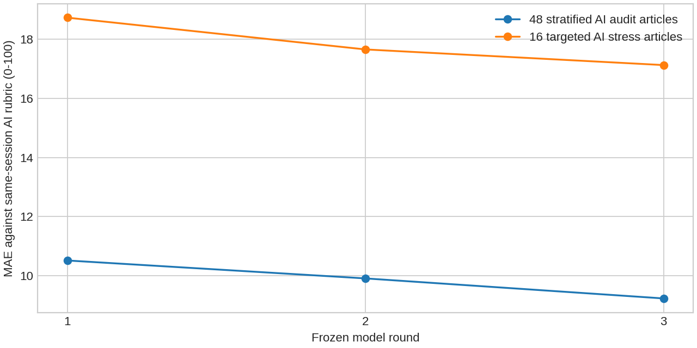

반복 학습과 고정 AI 감사
48건의 감사 기사는 시간상 검증·테스트 구간에서 먼저 고정했습니다. 아래 오차는 직접 판정으로 교체하기 전 모델 출력으로 계산했으며, 감사 점수는 학습이나 회차 선택에 쓰지 않았습니다. 일부 같은 사건의 후속 보도가 포함됩니다.

감사 중 발견한 홍보 삽입물은 180건에 같은 HTML 제거 규칙을 적용했습니다. 학습 기사에는 영향이 없어 모델 가중치는 유지했습니다. 정제 과정 전체가 감사 자료와 완전히 분리된 검증은 아니며, 정제 전 봉인 예측도 별도로 보존합니다.
| 회차 | 위험 지수 MAE /100 | N 오차 /4 | T 오차 /4 | A 오차 /4 |
|---|
같은 세션 AI의 판정과 모델 사이의 일치도입니다. 독립 정답에 대한 정확도는 아니며, 수치가 회차마다 반드시 좋아지는 것은 아닙니다. 12개 재학습 모델의 범위는 민감도이며 신뢰구간이 아닙니다. 모든 기사에 개별 전문 정독 판정을 했다고 표시하지 않습니다.